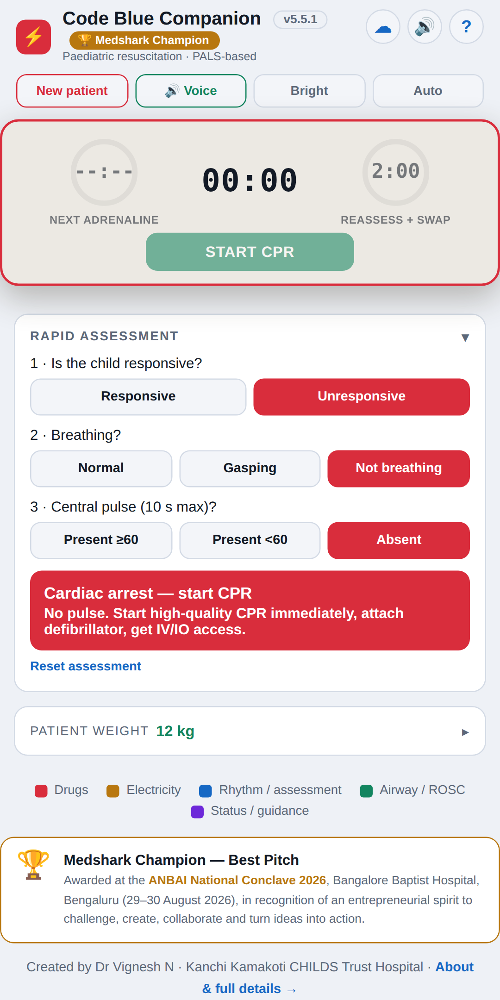
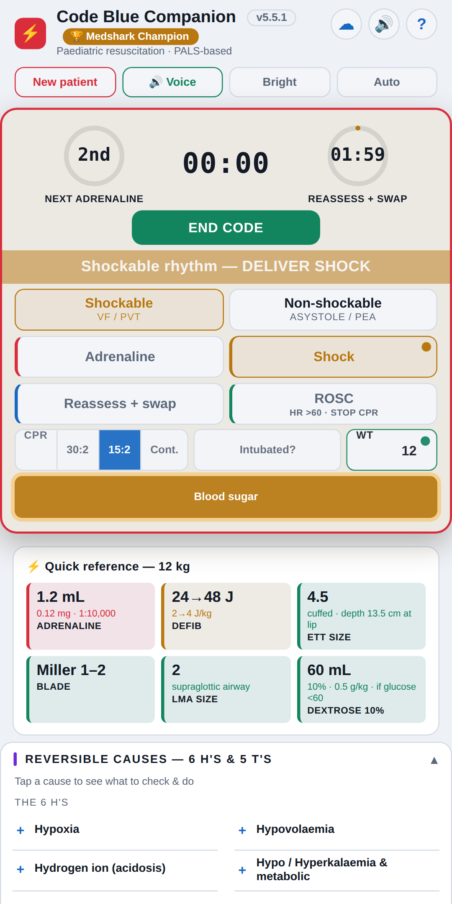
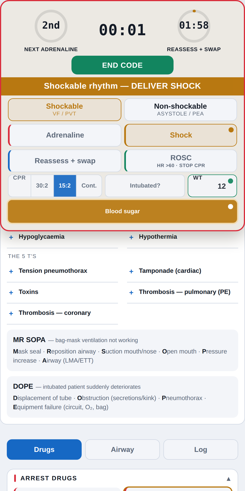

Code Blue Companion Live
cbc.pediaos.com
Paediatric resuscitation decision-support, aligned with AHA PALS 2020/2025 and APLS weight estimates. Enter a weight (or estimate it from age) and everything is calculated for you.
- Rapid assessment — responsive, breathing, pulse: tells you if it’s an arrest and what to do next.
- Weight-calculated doses — arrest drugs, RSI agents, infusions and equipment sizes, auto-capped.
- Arrest console & timers — cues adrenaline, reassessment and shocks as they fall due, with optional voice read-out.
- Code log — every action timestamped and saved securely for debriefing.


